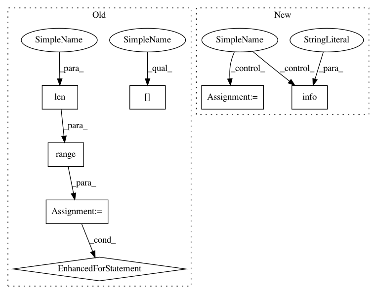

de336139770c6e9e035c0e402375efda48d75301,tensorflow/python/distribute/multi_process_lib.py,,_set_spawn_exe_path,#,89
Before Change
path_to_use = None
guess_path = sys.argv[0][:-3]
guess_path = guess_path.split(os.sep)
for path_reduction in range(-1, -len(guess_path), -1):
possible_path = os.sep.join(guess_path[:path_reduction] +
[guess_path[-1]])
if os.access(possible_path, os.X_OK):
path_to_use = possible_path
break
// The binary can possibly have _gpu suffix.
possible_path += "_gpu"
if os.access(possible_path, os.X_OK):
path_to_use = possible_path
break
if path_to_use is None:
raise RuntimeError("Cannot determine binary path")
sys.argv[0] = path_to_use
// Note that this sets the executable for *all* contexts.
After Change
org_tensorflow_path = sys.argv[0][:sys.argv[0].rfind("/tensorflow")]
binary = os.environ["TEST_TARGET"][2:].replace(":", "/", 1)
possible_path = os.path.join(org_tensorflow_path, binary)
logging.info("Guessed test binary path: %s", possible_path)
if os.access(possible_path, os.X_OK):
path = possible_path
if path is None:
logging.error(
"Cannot determine binary path. sys.argv[0]=%s os.environ=%s",
sys.argv[0], os.environ)
In pattern: SUPERPATTERN
Frequency: 4
Non-data size: 7
Instances
Project Name: tensorflow/tensorflow
Commit Name: de336139770c6e9e035c0e402375efda48d75301
Time: 2020-11-18
Author: crccw@google.com
File Name: tensorflow/python/distribute/multi_process_lib.py
Class Name:
Method Name: _set_spawn_exe_path
Project Name: tensorflow/tensorflow
Commit Name: de336139770c6e9e035c0e402375efda48d75301
Time: 2020-11-18
Author: crccw@google.com
File Name: tensorflow/python/distribute/multi_process_lib.py
Class Name:
Method Name: _set_spawn_exe_path
Project Name: uber/ludwig
Commit Name: 5667af96dade79ef77194d519182d4989494b3a4
Time: 2019-08-25
Author: smiryala@uber.com
File Name: ludwig/features/image_feature.py
Class Name: ImageBaseFeature
Method Name: add_feature_data
Project Name: uber/ludwig
Commit Name: 7d9db23a389499c2764fb850cd19f853cc3e8565
Time: 2019-08-08
Author: smiryala@uber.com
File Name: ludwig/features/image_feature.py
Class Name: ImageBaseFeature
Method Name: add_feature_data
Project Name: tensorflow/tensorflow
Commit Name: 448e080c752a1b5f54c422401b41e824b0274a91
Time: 2020-11-17
Author: crccw@google.com
File Name: tensorflow/python/distribute/multi_process_lib.py
Class Name:
Method Name: _set_spawn_exe_path